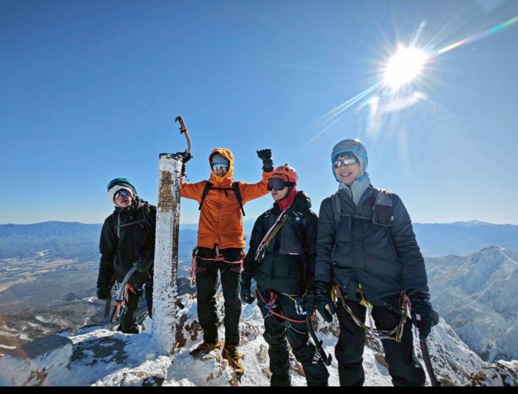
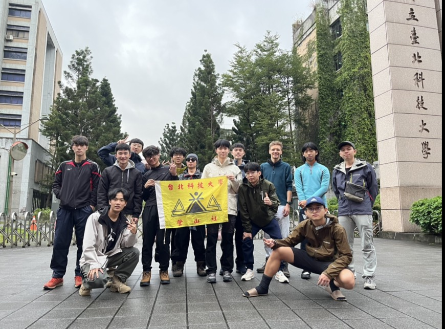
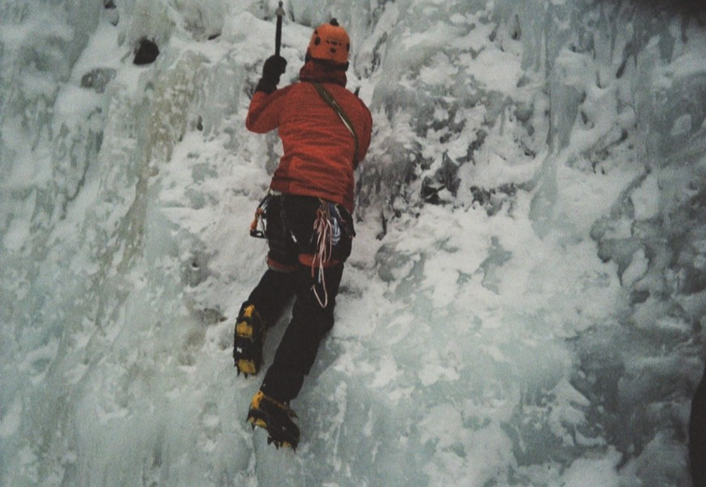
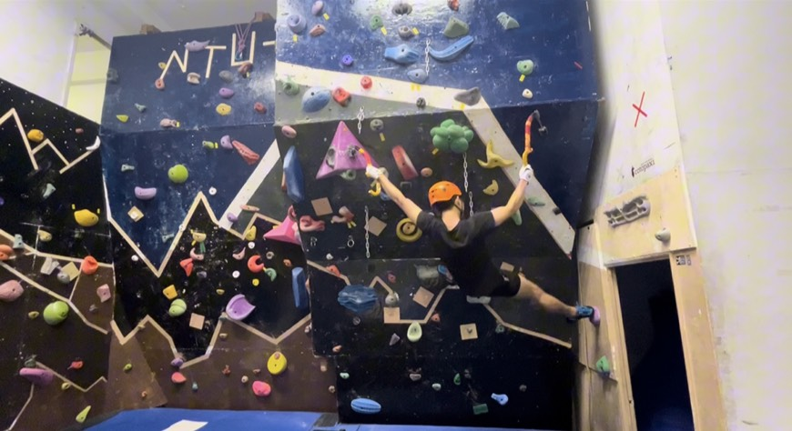

我是一名21歲的大學生。高中前兩年或許有些懵懂，直到高二升高三的暑假，才真正體會到學習的價值與力量。雖然起步比別人晚，但我靠著按部就班的自學與堅持，順利在應屆考取了北科大土木工程系，這段經歷也讓我更加珍惜得來不易的學習機會。
進入大學後，我逐步確立了自己的發展方向。現階段正踏實地朝著考取台大土木所結構組的目標努力，並期望未來能取得土木技師與結構技師雙證照。此外，我也計畫修習法律學分，將挑戰律師資格視為長遠目標，期許自己未來能成為兼具工程與法律思維的跨領域人才。

在課外，我致力於成為一名自主且自由的登山者。我曾擔任北科大東宿舍男宿總幹事、登山社社長以及岩場負責人。
我不僅攀登過台灣多座百岳，也熱愛技術性攀登，包含傳統攀岩 (Trad Climbing) 與 乾攀 (Drytooling)，並曾赴日本進行專業的雪地攀登訓練。山林不僅鍛鍊了我的體能，更淬鍊了我面對困難時的意志與判斷力。
實習期間，觀察到資料處理的痛點，自主利用 Google Apps Script (GAS) 開發自動化工具，直接萃取並處理 PDF 資料，大幅縮短原本需要人工謄打的時間與錯誤率。

完成南二段、聖稜線、單攻志雪等艱難百岳路線。前往日本八岳完成進階雪地攀登訓練。同時深耕傳統攀岩與乾攀技術，不斷突破自我極限。
